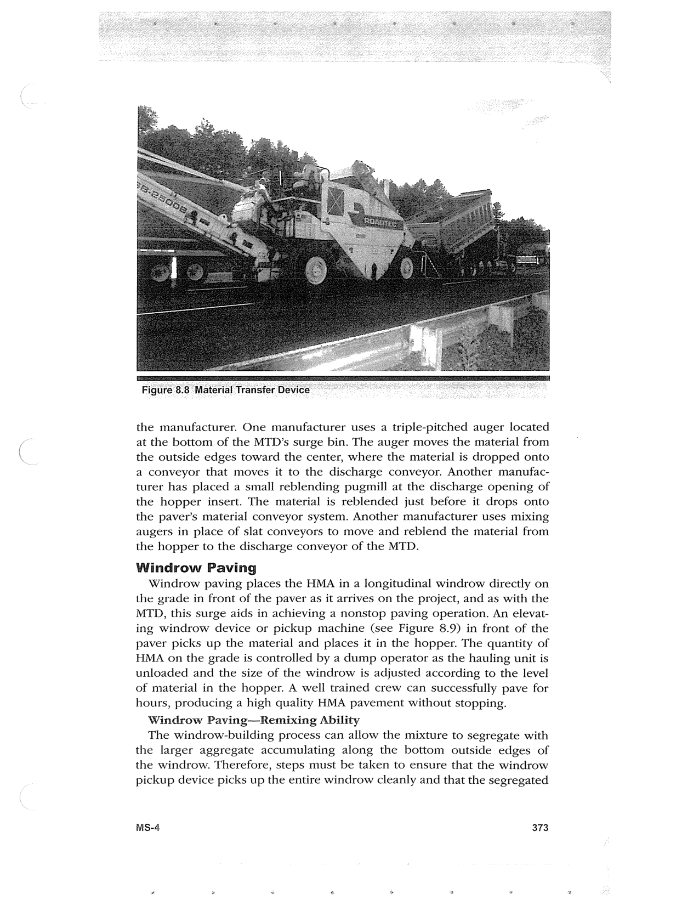

PDF page 407 · book page sequence 373


Searchable transcription
Unproofread OCR · 269 detected words; mean OCR confidence 95.78. Check technical values, symbols and table columns against the scan.
the manufacturer. One manufacturer uses a triple-pitched auger located at the bottom of the MTD’s surge bin. The auger moves the material from the outside edges toward the center, where the material is dropped onto a conveyor that moves it to the discharge conveyor. Another manufac- turer has placed a small reblending pugmill at the discharge opening of the hopper insert. The material is reblended just before it drops onto the paver’s material conveyor system. Another manufacturer uses mixing augers in place of slat conveyors to move and reblend the material from the hopper to the discharge conveyor of the MTD.
Windrow Paving
Windrow paving places the HMA in a longitudinal windrow directly on the grade in front of the paver as it arrives on the project, and as with the MTD, this surge aids in achieving a nonstop paving operation. An elevat- ing windrow device or pickup machine (see Figure 8.9) in front of the paver picks up the material and places it in the hopper. The quantity of HMA on the grade is controlled by a dump operator as the hauling unit is unloaded and the size of the windrow is adjusted according to the level of material in the hopper. A well trained crew can successfully pave for hours, producing a high quality HMA pavement without stopping.
Windrow Paving—Remixing Ability
The windrow-building process can allow the mixture to segregate with the larger aggregate accumulating along the bottom outside edges of the windrow. Therefore, steps must be taken to ensure that the windrow pickup device picks up the entire windrow cleanly and that the segregated
MS-4 373